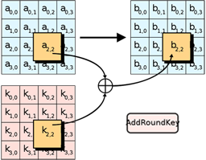

In this step of the encryption, the subkey is combined with the state (the 4x4 matrix that uses the AES algorithm for performing the transformations). During each round, a new subkey is derived from the main key using the Rijndael key schedule; each subkey is also a 4x4 matrix, so that the corresponding combinations with the state can be performed.
The subkey is obtained by combining each byte of the state with the corresponding byte of the subkey using the XOR operation.
